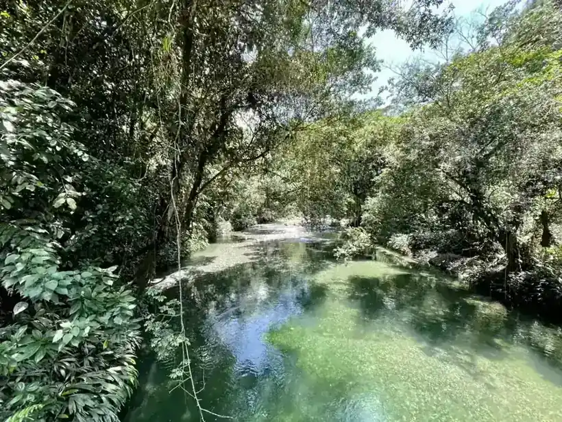

Inicio / Expediciones
Expediciones
Tours privados con guía local en Cocorná. Elige por tipo de aventura.
Caminatas
Cascadas, pozas, selva y montaña, con guía local. Todas son exigentes.
1 día


Valle de las Cascadas · 1 día
Aventura 3/5La PiñuelaLa Piñueladesde 160.000 COP pp→Más popular
Valle de las Cascadas · 2 días
Aventura 3/5La PiñuelaLa Piñueladesde 395.000 COP pp→
Valle de las Cascadas · 3 días
Aventura 3/5La PiñuelaLa Piñueladesde 830.000 COP pp→
Jungle Trekking Melcocho · 2 días
Aventura 4/5El RetiroEl RetiroConsulta el precio→3 días
Jungle Trekking Melcocho · 3 días
Aventura 4/5El RetiroEl RetiroConsulta el precio→
Teta de la Vieja
Aventura 4/5Consulta el precio→
Melcocho y páramo de Sonsón
Aventura 5/5El RetiroSonsónConsulta el precio→Deportes de agua
Rafting en los ríos de Cocorná, de aguas tranquilas a aguas bravas.

Aventuras extremas
Aire y roca: parapente y rapel en cascadas.

Cultura y campo
La vida campesina de Cocorná: panela, café, cacao y caballos.


Transporte
Te llevamos hasta donde empieza la aventura: en 4x4, van privada o chiva. Lo organizamos junto con tu plan.


Alojamiento
Ideas para dormir en Cocorná: fincas, nuestro lodge o un hotel. Lo reservamos junto con tu plan.

Paquetes Basecamp
Alojamiento y actividades en un solo paquete, con Cascadia Lodge como base.